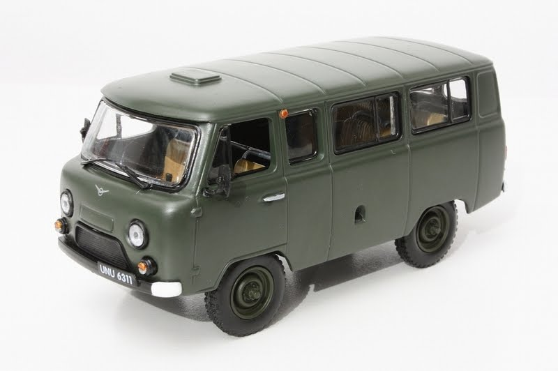
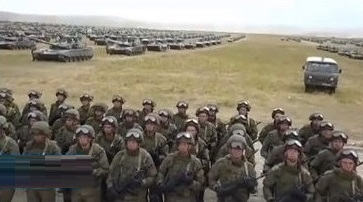

|  |  Занимает отдельное, почетное место среди остальной военной техники. |
|
Источник: https://ru.wikipedia.org/wiki/УАЗ-452 УАЗ-2206/3741/3909/39094/3962/3303 (в просторечии — «Буханка») — семейство советских и российских полноприводных малотоннажных грузо-пассажирских автомобилей повышенной проходимости, производящихся на Ульяновском автомобильном заводе. Представляет собой I поколение грузопассажирских АПП УАЗ. Вынужденно заняло собой место модели УАЗ-3165 в 1990-2000 гг., по причине непоявления последней. Серийный выпуск УАЗ-452 начат в 1965 году. Автомобили УАЗ-452, выпускавшиеся в период с 1965 по 1979 год, отличались наличием светотехники старого образца (бесцветные поворотники, задние фонари круглой формы), штамповкой последнего бокового фальшокна заходящей назад к задним дверям, более закругленными задними углами кузова, специальной нишей для номерного знака на левой задней двери. Автомобиль производится как в кузовном (вагонном), так и в бортовом варианте («головастик»). Кузов автомобиля может быть оснащён боковыми одностворчатыми дверьми и двустворчатой дверью сзади (конфигурация дверей зависит от конкретной модификации). Двигатель — вариант двигателя ГАЗ-21. Колёсная формула 4 × 4. В 1997 году автомобиль получил новый мотор УМЗ-4218 объёмом 2,9 литра и мощностью 98 л. с. В 2008 году этот мотор совместно с фирмой Bosch, с которой УАЗ сотрудничал в области электронного впрыска топлива, модернизировали, он стал называться УМЗ-4213 (2,9 л, 99 л. с.) и отвечал нормам «Евро-3». В 2009 году УАЗ начал оснащать свои фургоны заводским атмосферным 4-цилиндровым двигателем ЗМЗ-409 объёмом 2690 см³ с системой газораспределения DOHC мощностью 112 л. с. при 4000 об./мин. В марте 2011 года моделям 3962/39625 (санитарный фургон) и 2206 (микроавтобус) провели модернизацию. Были добавлены ABS, гидроусилитель руля, ремни безопасности по стандарту Евро-4, новый травмобезопасный руль (на пассажирских версиях), двигатель тоже по стандарту Евро-4. В 2016 году была проведена новая модернизация: все приборы были сведены к одному циферблату спидометра с дисплеем на нём, где отображаются прочие сведения и перенесены в центр приборной панели; появилась ниша для аудиосистемы, передние сиденья с интегрированными подголовниками и продольной регулировкой, передний бампер с «клыками», улучшенная шумоизоляция моторного отсека, грузовые версии получили новый травмобезопасный руль. С 1 апреля 2011 года автомобиль оборудуется гидроусилителем рулевого управления и антиблокировочной системой тормозов.Автомобиль скорой медицинской помощи УАЗ-3962 — санитарный автомобиль.УАЗ-3909 «Фермер» — модель вагонного типа. Грузо-пассажирский полноприводный автомобиль с тремя боковыми одностворчатыми дверьми и двустворчатой дверью задка. Производится. УАЗ-39094 «Фермер» — полноприводный грузовик. Выпускается с 1997 года[6] Кабина — цельнометаллическая, пятиместная, с тремя боковыми одностворчатыми дверьми и съёмной крышкой капота двигателя. Автомобиль имеет металлическую грузовую платформу со съёмным тентом. УАЗ-3909i — военный санитарный автомобиль. УАЗ-390945-903 — малый лесопатрульный комплекс для борьбы с лесными пожарами. ДИСА-1912 «Заслон» — специальный бронированный автомобиль для перевозки ценностей (ООО « ДИСА»). ПТКС-2 (спецавтомобиль для Передвижной Телевизионной Контрольной Станции), разработанный во Львове в 1985 году. Отличался высокой крышей с мощным трубчатым каркасом, выдвижной телескопической мачтой и люком для выхода оператора на крышу. |